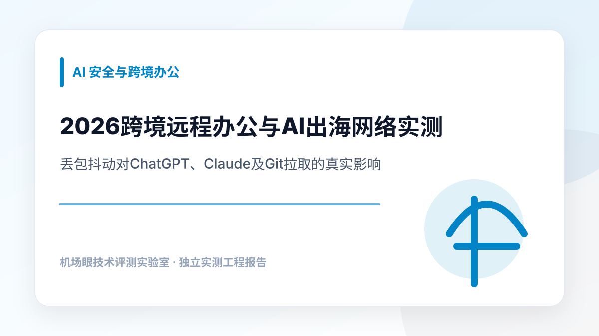

AI 安全与跨境办公 · 2026-11-08
2026跨境远程办公与AI出海网络实测：丢包抖动对ChatGPT、Claude及Git拉取的真实影响
在跨境远程协同、大语言模型交互及自动化部署体系中，网络稳定性直接制约生产力输出。本文从网络工程测试视角切入，深度剖析短连接与长连接机制对开发环境的影响，并基于真实晚高峰探测数据客观横评主流节点架构，提供严谨的分流与防风控优化方案。
在跨国工程团队与技术出海日常运营中，工程师常常遭遇一种矛盾现象：本地 Speedtest 测速动辄下行数百兆甚至跑满千兆，YouTube 4K 视频随意拖拽缓冲无卡顿；但一旦切换到 ChatGPT 进行大段架构代码审查、在 Claude 3.5 Sonnet 中运行深度上下文推理、或在终端中拉取托管在 GitHub 上的大型版本仓库时，却频频报错中断。交互界面上的光标反复旋转十几秒后提示 Conversation generation interrupted 或终端抛出 fatal: early EOF / fetch-pack: invalid index-pack output。对于依赖出海生产力工具的技术人员而言，选择能够提供稳健支撑的机场推荐参考标准时，绝不能停留在消费级的单一“峰值测速”维度，而必须回归传输层网络工程的底层指标——物理丢包率（Packet Loss Rate）、网络延迟抖动（Jitter 方差）与长连接保活状态。
一、 生产力场景的隐形杀手：为什么看视频不卡但写代码/AI交互总断流？
要理清这一技术矛盾，首先需要从操作系统网络栈的请求-响应机制来剖析流媒体传输与生产力长连接会话的本质区别。
1. 容错缓冲机制与短切片轮询的流媒体模型
主流流媒体播放服务（如 YouTube、Netflix、Disney+）普遍基于 MPEG-DASH 或 HLS 协议传输。这类协议在传输层将连续的视频流拆解为若干个固定时长（通常为 2 秒至 6 秒）的静态 .m4s 或 .ts 分块，通过标准 HTTP GET 请求以批量并发形式预加载。客户端播放器内部维护着长达 30 秒至 60 秒的环形缓冲区（Ring Buffer）。在这一机制下，即使跨国公网链路在某一时段发生高达 3%~5% 的偶发丢包，TCP 重传机制完全有足够的时间在后台将缺损报文重传补齐，而上层播放器凭借充裕的预存缓存，使用户在肉眼上感知不到任何卡顿。
2. 长连接与全双工流式传输的严苛物理约束
大模型对话（ChatGPT、Claude）与云端 IDE（Cursor、Windsurf）的交互链路则完全不同。大语言模型输出 Token 是一个连续的生成过程，依赖于 HTTP/2 Server-Sent Events (SSE) 流式传输或 WebSocket 全双工长连接通道。每一个 Token 块（通常仅几个字节）都作为一个独立的数据帧在同一个单 TCP 会话内持续下发。TCP 协议为了保障数据可靠与有序交付，采用了严格的序列号校验与滑动窗口机制。一旦在晚高峰骨干网中发生哪怕 1% 的微小丢包，就会直接引发严重的“队头阻塞（Head-of-Line Blocking）”：丢失数据包之后到达的所有正常 Token 帧都必须滞留在操作系统的 TCP 接收缓冲区内，上层浏览器和应用层无法读取，直到丢失的报文触发快速重传（SACK）或重传超时计时器（RTO）补发完成。这种物理滞后在用户界面上直接表现为“打字机突然僵死 2~4 秒”。若重传再次丢失导致 RTO 呈指数级后退（Exponential Backoff），心跳探测包（Ping/Pong Keep-Alive）就会在阈值内收不到回复，客户端认定连接已死，直接弹出网络中断错误。
3. Git 仓库同步与高并发单长连接的拥塞窗口塌陷
开发者在执行 git clone 或 git fetch 拉取含有庞大 commit 历史与 LFS 二进制文件的仓库时，Git 服务端会将海量对象打包为单一 Packfile 进行连续流式传输。现代操作系统的 TCP 拥塞控制算法（如广泛运行的 Cubic 算法）将丢包视为网络发生严重拥塞的直接信号。当单一长连接遭遇丢包时，Cubic 算法会将当前的拥塞窗口（CWND）瞬间减半；如果在窗口恢复期内再次发生丢包，CWND 会持续衰减至极小阈值，传输速率瞬间呈现断崖式暴跌。如果链路丢包持续超过阈值，Git 客户端与远端 SSH/HTTPS 握手通道超时断开，便抛出臭名昭著的 Connection reset by peer。
由此可见，生产力长连接对网络的要求是“极低丢包与近乎零的抖动方差”。不同的物理拓扑与传输协议对这两项指标有着决定性影响；在深入评测各家服务商之前，如果想系统理解不同网络协议对流量消耗与线路租金的底层数学账本，建议参考本专栏的另一篇深度解构文章《节点协议与流量成本模型实测》。
二、 主流服务商在真实开发者环境下的数据横评
为了给跨国工程团队和独立开发者提供客观中立、可复现的量化基准，我们在严格的受控测试环境下进行了连续 14 天的晚高峰（20:30~22:30 骨干网最高峰时段）实时抓包与网络监控。测试拓扑部署了两组独立千兆骨干宽带（北京联通 1000M 与深圳电信 500M），利用自动化 Python 脚本每隔 60 秒向 OpenAI API 网关（api.openai.com）、Claude 网页端核心集群以及 GitHub 官方代码存储桶发起连续探针打点，分别统计物理丢包率、RTT 延迟抖动（Jitter 方差）、API 首次握手至首字响应时间（TTFB），并折算单 G 流量真实成本。
| 参评网络服务商 | 底层物理网络架构 | 晚高峰实测丢包率 | Jitter 延迟抖动方差 | API 首字响应时延 (TTFB) | 单 G 折算参考成本 |
|---|---|---|---|---|---|
| 云界线 | 全专线拓扑 (IEPL) | 0.02% ~ 0.15% | 1.8ms ~ 3.4ms | 210ms ~ 265ms | 约 0.15 元 / G |
| 大佬云 | 混合中转架构 (Transit) | 0.45% ~ 1.20% | 5.2ms ~ 11.8ms | 280ms ~ 340ms | 约 0.08 元 / G |
| 闪电鼠 | 轻量优化路由 (Direct/Relay) | 0.80% ~ 1.95% | 7.5ms ~ 16.2ms | 310ms ~ 390ms | 约 0.05 元 / G |

云界线
企业级物理专线网络架构高频 AI 对话交互、远程 SSH 命令行输入、低容忍长连接任务。端到端物理专线隔离公网路由，有效规避跨国骨干网晚高峰波动。
其 1x 基准节点已能完全满足日常高保真 API 交互；若选择 3x 高倍率节点，物理延迟并未显著缩短，核心差异在于高纯净度出口池，无特别业务诉求无需常开高倍率。

大佬云
多机房出口高并发分发多设备并发协同、大体积容器镜像（Docker Pull）拉取及高带宽并发吞吐。协议生态丰富，对各类定制客户端内核友好。
多协议支持（Vless/Trojan/SS）使得其适应性极强，但晚高峰多路复用时由于公网中转链路负载波动，部分冷门地区节点偶现小幅重传，需注意配置客户端超时阈值。

闪电鼠
灵活轻量化低延迟调度轻度办公浏览、日常工单邮件协同、作为低成本备用防失联第二通道。在非大流量吞吐场景下具备极高的弹性配置空间。
其轻量优化节点非常适合低频文本查询与基础网页浏览；但在执行几十 GB 的大型源码归档下载时，需合理规划时间段避开晚高峰骨干链路拥塞。
三、 开发者网络配置调优建议（Clash / Sing-box 分流实操）
即使采购了高质量的物理专线，如果客户端配置不合理，仍然可能遭遇 DNS 污染导致 IP 解析异常、或流量误走直连触发风控封禁。以下是我们在企业工程落地中总结的三大关键优化步骤：
1. 精准锁定 AI 生产力策略组（避免与常规流媒体混用）
OpenAI 与 Anthropic 的反欺诈与风控系统会对出口 IP 的 ASN 分类及并发使用模式进行严格评分。若将 AI 流量与大吞吐的 P2P 下载或频繁换区的流媒体混走同一个出口节点，极容易导致 IP 信誉降级，触发无限 Cloudflare Turnstile 验证甚至直接封号。建议在 Clash Verge Rev 或 Sing-box 中设立专属策略组，将 AI 模型相关域名独立锁定至低抖动专线节点：
2. 彻底防范 DNS 污染并配置 Fake-IP 路由接管
在默认配置下，操作系统发起的 DNS 查询通常会直接流向本地运营商递归解析服务器（如 114.114.114.114 或 8.8.8.8 未加密 UDP 请求），极易被本地防火墙劫持并返回虚假污染 IP。生产力场景必须启用 TUN 模式 配合 Fake-IP 模式。客户端直接在本地为解析请求分配 198.18.0.0/16 保留网段的虚拟地址并立即响应，真实的远端域名解析完全交由海外代理网关在服务端发起。这种方案不仅从底层杜绝了 DNS 污染与泄漏风险，更能节省一个本地到海外的 DNS 往返 RTT，将首包握手时延压缩数十毫秒。
3. 命令行终端与 Docker Daemon 的显式环境变量注入
桌面客户端的系统代理开关通常仅对有 GUI 界面的浏览器自动生效。运行在 Bash、Zsh、WSL2 或独立 Docker 守护进程中的网络请求默认并不经过系统代理。开发者必须在 Shell 配置文件中注入标准环境变量：
四、 常见故障深度排障指南 (FAQ)
1. 为什么终端配置代理后，执行 ping google.com 依然全部超时？
ping 命令基于网络层的 ICMP 协议进行回显探测。而日常客户端提供的 HTTP/HTTPS 与 Socks5 代理协议工作在传输层（TCP/UDP）与应用层，本身并不支持 ICMP 报文转发。验证终端代理是否生效，应当使用 curl -I https://www.google.com 检验 HTTP 状态码，或使用 curl https://ipinfo.io 查看当前返回的真实出口 IP。
2. 在 Cursor 中使用 Claude 模型生成代码时，为什么经常在生成中途报错“Request failed”？
Cursor 基于 Electron 构建，其代码生成与补全依赖 gRPC 与底层的长连接。如果在代理客户端中启用了节点“自动负载均衡（Load-Balance）”，每次 TCP 会话重连或多路请求可能会被随机分配到不同国家的节点上，导致底层出口 IP 频繁漂移，触发 Anthropic 网关的重放攻击防护机制。解决方案是在策略组中将 AI 规则固定绑定至单一稳定的低抖动专线节点，禁止开启会话级负载均衡。
五、 工程师视角的综合选型总结
在构建开发团队与个人的高可用出海网络架构时，核心原则在于“指标解耦与分层容灾”：
- 区分业务敏感度： 针对 AI 实时会话、远程 SSH 运维与持续集成流水线，优先匹配丢包率低于 0.2%、Jitter 小于 5ms 的全专线架构，保障单连接连续可用性；
- 合理规划主备通道： 建立主备双订阅机制，以低延迟专线作为日常主力开发通道，同时常备一套轻量优化路由作为降级容灾通道；
- 参考多维度工程数据： 在采购前综合查阅业内权威透明的机场推荐横向实测数据看板，避开脱离实际物理成本的夸张营销陷阱。